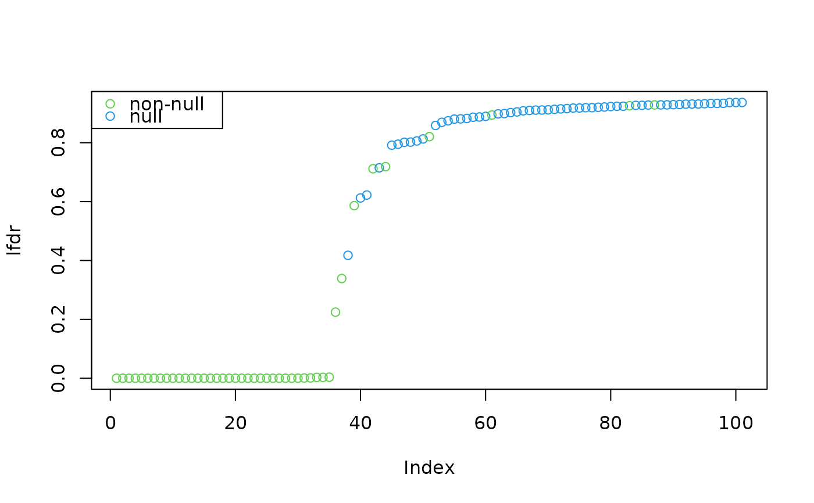
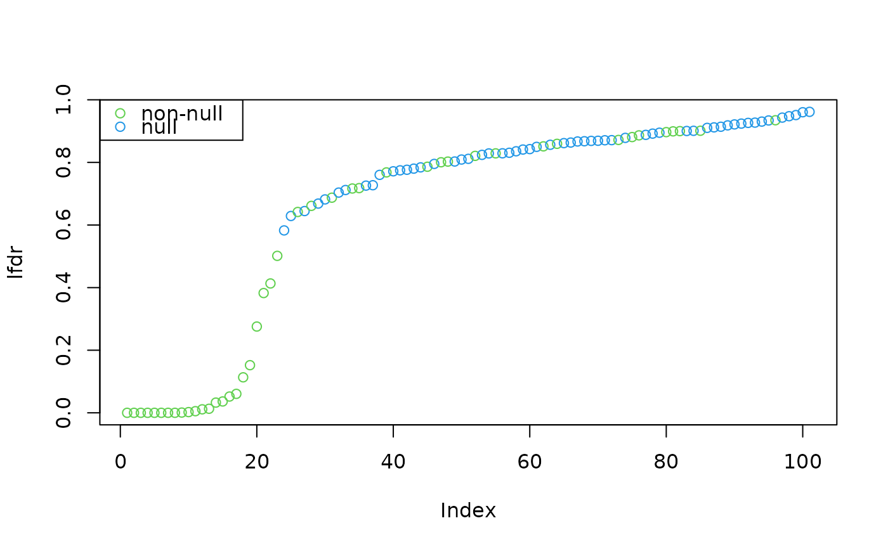
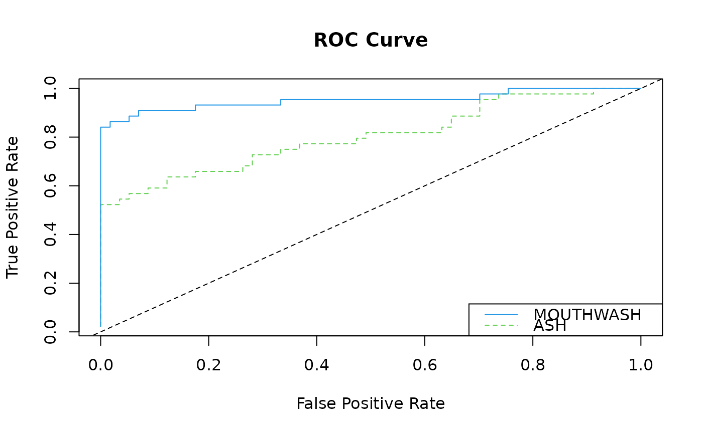

R/mouthwash.R
mouthwash.RdThis function implements the full MOUTHWASH method. First, it
rotates the response and explanatory variables into a part that we
use to estimate the confounding variables and the variances, and a
part that we use to estimate the coefficients of the observed
covariates. This function will implement a factor analysis for the
first part then run mouthwash_second_step for the
second part.
mouthwash( Y, X, k = NULL, cov_of_interest = ncol(X), include_intercept = TRUE, limmashrink = TRUE, fa_func = pca_naive, fa_args = list(), likelihood = c("normal", "t"), mixing_dist = c("normal", "uniform", "+uniform", "sym_uniform"), lambda_type = c("zero_conc", "uniform"), pi_init_type = c("zero_conc", "uniform", "random"), degrees_freedom = NULL, pi_init = NULL, grid_seq = NULL, lambda_seq = NULL, lambda0 = 10, scale_var = TRUE, plot_update = FALSE, sprop = 0, var_inflate_pen = 0, subsample = FALSE, num_sub = min(1000, ncol(Y)), same_grid = FALSE, use_t_adjust = FALSE, detailed_output = FALSE, verbose = TRUE )
| Y | A matrix of numerics. These are the response variables where each column has its own variance. In a gene expression study, the rows are the individuals and the columns are the genes. |
|---|---|
| X | A matrix of numerics. The observed covariates. |
| k | A non-negative integer.The number of unobserved confounders. If not specified and the R package sva is installed, then this function will estimate the number of hidden confounders using the methods of Buja and Eyuboglu (1992). |
| cov_of_interest | A positive integer. The column number of the covariate in X whose coefficients you are interested in. The rest are considered nuisance parameters and are regressed out by OLS. |
| include_intercept | A logical. If |
| limmashrink | A logical. Should we apply hierarchical
shrinkage to the variances ( |
| fa_func | A factor analysis function. The function must have
as inputs a numeric matrix |
| fa_args | A list. Additional arguments you want to pass to fa_func. |
| likelihood | Either |
| mixing_dist | A character. Should we use a mixture of uniforms
( |
| lambda_type | A character. Should we apply a penalty on zero
( |
| pi_init_type | How should we initialize the mixing
proportions? By concentrating on zero ( |
| degrees_freedom | if |
| pi_init | A numeric vector. These are the initial values of the mixing proportions. |
| grid_seq | The grid for the mixing distribution. If
|
| lambda_seq | A numeric vector with elements all greater than
or equal to 1. These are the tuning parameters for the mixing
proportions. This can only be specified if |
| lambda0 | A numeric greater than or equal to 1. The penalty on
zero if |
| scale_var | A logical. Should we estimate a variance inflation
parameter ( |
| plot_update | A logical. Should I plot the the path of the
log-likelihood ( |
| sprop | If \(b\) is an effect and \(s\) is an estimated
standard error, then we model \(b/s^{sprop}\) as
exchangeable. The default is 0. When |
| var_inflate_pen | The penalty to apply on the variance inflation parameter.
Defaults to 0, but should be something non-zero when |
| subsample | A logical. Should we only use a subsample of the genes to estimate
the hidden covariates ( |
| num_sub | The number of genes to subsample if |
| same_grid | A logical. If |
| use_t_adjust | A logical. Should we adjust the variance estimates so that the p-values
from the z-statistics match the corresponding p-values from the original
t-statistics ( |
| detailed_output | A logical. Should we return a lot of output ( |
| verbose | If |
A list with some or all of the following elements.
fitted_g: The estimated unimodal prior. It is of class
unimix if mixing_dist is one of
"uniform", "+uniform", or
"sym_uniform". It is of class
normalmix if mixing_dist is
"normal".
loglik The final log-likelihood.
logLR The likelihood ratio compared to the all-null setting (point-mass on zero).
data Post-confounder adjusted ashr data.
pi0 The estimate of the proportion of null genes.
z2 The estimated confounders (after rotation)
corresponding the covariates of interest (z2). Mostly output for
debugging reasons.
xi The estimated variance inflation parameter.
Zhat The estimate of the confounders.
alphahat The estimate of the coefficients of the confounders.
sig_diag The estimate of the column-specific variances.
result A data frame with the results from MOUTHWASH. The columns of which are
NegativeProbThe probability that the effect is negative.
PositiveProbThe probability that the effect is positive.
lfsrThe local false sign rates of each effect.
svalueThe s-values, a measure of significance.
lfdrThe local false discovery rates.
qvalueThe q-values, a measure of significance.
PosteriorMeanThe posterior means of the effects.
PosteriorSDThe posterior standard deviations of the effects.
extraIf detailed_output = TRUE, this list is returned with some extra output. Mostly used for debugging.
The assumed model is $$Y = X\beta + Z\alpha + E.$$ \(Y\) is a
\(n\) by p matrix of response variables. For example, each
row might be an array of log-transformed gene-expression data.
\(X\) is a \(n\) by \(q\) matrix of observed covariates. It
is assumed that all but one column of which contains nuisance
parameters. For example, the first column might be a vector of ones
to include an intercept. \(\beta\) is a \(q\) by \(p\) matrix
of corresponding coefficients. \(Z\) is a \(n\) by \(k\)
matrix of confounder variables. \(\alpha\) is the corresponding
\(k\) by \(p\) matrix of coefficients for the unobserved
confounders. \(E\) is a \(n\) by \(p\) matrix of error
terms. \(E\) is assumed to be matrix normal with identity row
covariance and diagonal column covariance \(\Sigma\). That is,
the columns are heteroscedastic while the rows are homoscedastic
independent.
This function will first rotate \(Y\) and \(X\) using the QR
decomposition. This separates the model into three parts. The first
part contains nuisance parameters, the second part contains
the coefficients of interest, and the third part contains the
confounders. mouthwash applies a user-provided factor
analysis to the third part to estimate the confounding factors,
then runs an EM (or coordinate-ascent) algorithm on the second part
to estimate the coefficients of interest.
There are a couple forms of factor analysis available in this package. The default is PCA with the column-wise residual mean-squares as the estimates of the column-wise variances.
For instructions and examples on how to specify your own factor analysis, run the following code in R:
utils::vignette("customFA", package = "vicar"). If it doesn't work, then you probably haven't built
the vignettes. To do so, see https://github.com/dcgerard/vicar#vignettes.
Gerard, D., and Stephens, M. 2020. "Empirical Bayes shrinkage and false discovery rate estimation, allowing for unwanted variation", Biostatistics, 21(1), 15-32 doi: 10.1093/biostatistics/kxy029
Factor analyses available in the vicar package:
pca_naive, fa_ml.
backwash for a similar method that puts a prior on the
unobserved confounders rather than maximizes over them.
David Gerard
library(vicar) ## Generate data ---------------------------------------------------------- set.seed(116) n <- 13 p <- 101 k <- 2 q <- 3 is_null <- rep(FALSE, length = p) is_null[1:57] <- TRUE X <- matrix(stats::rnorm(n * q), nrow = n) B <- matrix(stats::rnorm(q * p), nrow = q) B[2, is_null] <- 0 Z <- X %*% matrix(stats::rnorm(q * k), nrow = q) + matrix(rnorm(n * k), nrow = n) A <- matrix(stats::rnorm(k * p), nrow = k) E <- matrix(stats::rnorm(n * p, sd = 1 / 2), nrow = n) Y <- X %*% B + Z %*% A + E ## Fit MOUTHWASH ---------------------------------------------------------- mout <- mouthwash(Y = Y, X = X, k = k, cov_of_interest = 2, include_intercept = FALSE)#> Running mouthwash on 13 x 3 matrix X and 13 x 101 matrix Y. #> - Computing independent basis using QR decomposition. #> - Computation took 0.002 seconds. #> - Running additional preprocessing steps. #> - Computation took 0.001 seconds. #> - Running second step of mouthwash: #> + Estimating model parameters using EM. #> + Computation took 0.609 seconds. #> + Generating adaptive shrinkage (ash) output. #> + Computation took 0.012 seconds. #> - Second step took 0.873 seconds. #> - Estimating additional hidden confounders. #> - Computation took 0 seconds.mout$pi0 ## mouthwash estimate#> [1] 0.5933908#> [1] 0.5643564## plot ordering order_lfdr <- order(mout$result$lfdr) graphics::plot(mout$result$lfdr[order_lfdr], col = is_null[order_lfdr] + 3, ylab = "lfdr")## Compare to ASH on OLS coefficients ------------------------------------- lmout <- limma::lmFit(t(Y), X) betahat_ols <- lmout$coefficients[, 2] sebetahat_ols <- lmout$stdev.unscaled[, 2] * lmout$sigma aout <- ashr::ash.workhorse(betahat = betahat_ols, sebetahat = sebetahat_ols, optmethod = "mixEM") ashr::get_pi0(aout) ## ash estimate#> [1] 0.6901872#> [1] 0.5643564ash_lfdr <- ashr::get_lfdr(aout) aorder_lfdr <- order(ash_lfdr) graphics::plot(ash_lfdr[aorder_lfdr], col = is_null[aorder_lfdr] + 3, ylab = "lfdr")## ROC Curves ------------------------------------------------------------- afpr <- cumsum(is_null[aorder_lfdr]) / sum(is_null) atpr <- cumsum(!is_null[aorder_lfdr]) / sum(!is_null) mfpr <- cumsum(is_null[order_lfdr]) / sum(is_null) mtpr <- cumsum(!is_null[order_lfdr]) / sum(!is_null) graphics::plot(afpr, atpr, type = "l", xlab = "False Positive Rate", ylab = "True Positive Rate", main = "ROC Curve", col = 3, lty = 2)